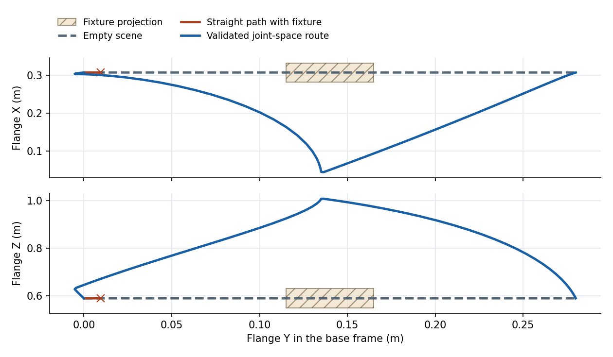

Plan around a fixture in a live MoveIt simulation
The two end configurations are valid even with a fixture between them. Reproduce a partial Cartesian result, compare it with a joint-space detour and investigate a path that fails after time parameterization.
Read two recorded runs
Use the validated route samples and the rejected route samples for the recorded exercise. Both come from MoveIt 2.12.4 with the Panda example model on ROS 2 Jazzy. For each, compare flange Y at the first and last points of each named path. Inspect whether the other axes stayed constant, and use the duration of the last sample to compare the two complete paths.

The target is 0.28 m farther along base-frame Y and keeps the starting orientation. The worksheet uses panda_link8 as the flange frame. A tool fitted farther out needs its own frame and collision geometry. The modeled box is 50 × 50 × 80 mm, centered halfway along the requested line in the base frame.
Launch the same test with no robot controllers
Use Ubuntu 24.04 with a sourced ROS 2 Jazzy installation. With the standard ROS package repository already configured, install the packages and download the launch file and the planning exercise into the same folder.
sudo apt install ros-jazzy-moveit ros-jazzy-moveit-resources-panda-moveit-config \
ros-jazzy-joint-state-publisherOpen two shells in the folder. Source Jazzy in each and choose the same unused domain with discovery restricted to the local machine. The launch file publishes a fixed simulated joint state. Its planning services have no trajectory execution action. Run the launch in the first shell.
source /opt/ros/jazzy/setup.bash
export ROS_DOMAIN_ID=83 ROS_AUTOMATIC_DISCOVERY_RANGE=LOCALHOST
ros2 launch ./planning_lab.launch.pyIn the second shell, list the relevant services and request the trial. Use a new output CSV filename for each run. No physical robot or visualization window is needed.
source /opt/ros/jazzy/setup.bash
export ROS_DOMAIN_ID=83 ROS_AUTOMATIC_DISCOVERY_RANGE=LOCALHOST
ros2 service list -t
python3 plan.py local-samples.csvFind the boundaries where each result changes
- Check the empty scene first. The straight interpolation completes with fraction 1.000 and ends at base Y ≈ 0.280 m.
- Add the fixture as a scene diff and read its ID back. Check the start, the goal configuration from the first run and the middle state from the former line. The middle produces contact with the hand and link 7 even though both end states still pass.
- Run the straight request with collision checks again. The service reports code 1 alongside fraction 0.034 and stops near Y = 0.0097 m. Almost all the requested move remains. A successful service calculation can return a usable prefix for diagnosis.
- Plan to the same goal configuration with RRTConnect and compare the timed solution. In the recorded 61-point example it reaches Y ≈ 0.280 m in 5.94 s. The empty-scene straight result took 2.10 s. The fixture is then removed and the full straight path returns.
The CSV checks the returned sample configurations with the planner’s state-validity service while each scene is active. The script labels a returned failed route rejected_rrtconnect. A valid recorded sample count and an accepted joint goal do not establish the clearance of a physical tool. MoveIt · Cartesian path service fields.
Inspect a route rejected after time parameterization
Stop your simulation launch with Ctrl+C and rerun it with edge_fraction:=0.01. The default 0.001 requests a finer OMPL edge sampling interval for the Panda group. Try several independent runs with each setting. With the larger interval, one observed detour returned 73 points and error code 99999. The pipeline log showed ValidateSolution rejecting it after time parameterization. In that file, samples 65 and 66 collide.
Keep the fixture, frame and start fixed when comparing runs. The planner samples alternative paths, so a pass or fail on one pair of runs cannot isolate the cause. A path can cut close to a collision boundary after interpolation or retiming. Compare the final validation evidence, point locations and configured checks before changing the target geometry or tuning. MoveIt · Trajectory time processing.
What evidence clears the transfer in this exercise?
Use a response that accepts the full intended motion, with valid final states and verified scene contents. For a straight process move require completion of the required segment and its orientation and approach constraints. For a joint-space transfer compare the actual swept path, tool state and final trajectory checks. Keep lead-in and transfer motions separate when the approach must stay straight.